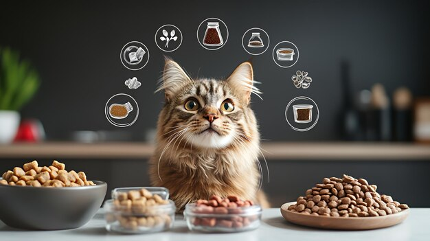
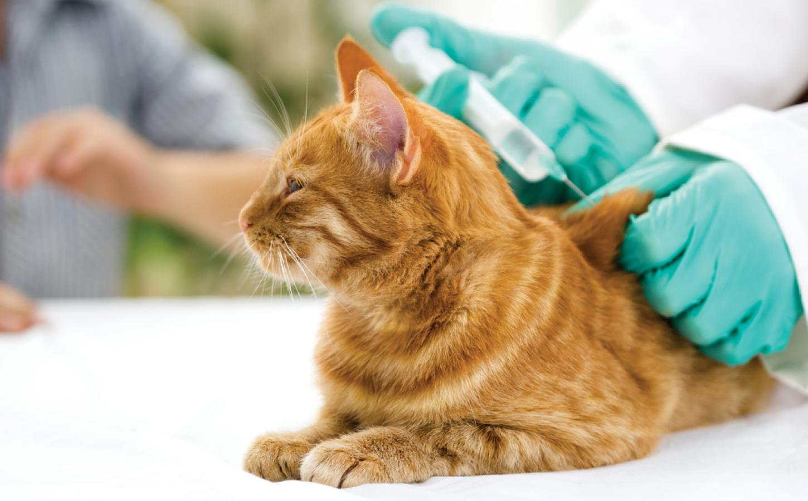
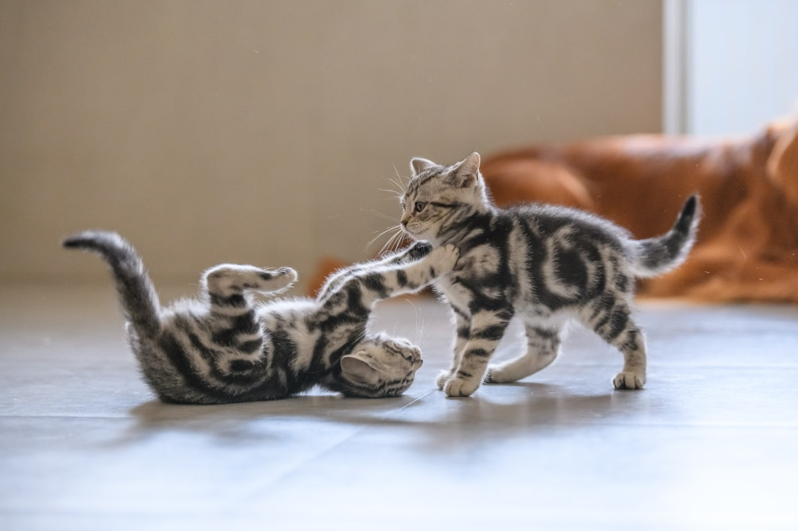

Alimentación
Proporciona comida rica en taurina y agua fresca diaria. Evita los lácteos.

Proporciona comida rica en taurina y agua fresca diaria. Evita los lácteos.

Visitas anuales al veterinario, vacunas al día y desparasitación son esenciales.

Los rascadores y juguetes evitan el estrés y la obesidad en gatos de interior.